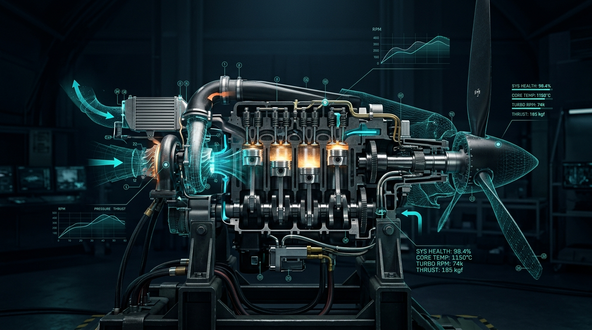

AEROSPACE PROPULSION INTELLIGENCE · SIH 2026
AERIS-TWIN
Predict the Engine.
Before It Fails.
An AI-powered Digital Twin for real-time health monitoring and predictive maintenance of aero-piston engines.

INTELLIGENCE PIPELINE
One Continuous Pipeline
From engine telemetry to predictive insight through one continuous intelligence pipeline.
01
REAL-TIME TELEMETRY
02
DIGITAL TWIN
03
AI PROGNOSTICS
04
ACTIONABLE INSIGHT
CAPABILITIES
Three Core Pillars
01 — SEE
Real-Time Engine State
Monitor critical engine parameters as they change.
02 — PREDICT
AI-Powered Prognostics
Detect anomalies, identify emerging faults and track degradation.
03 — ACT
Maintenance Intelligence
Turn engine health data into clear maintenance and mission decisions.
“Don’t wait for failure.
Understand degradation while it is happening.”
REAL-TIME
PHYSICS-INFORMED
AI-ASSISTED